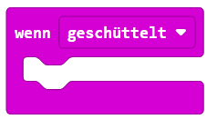
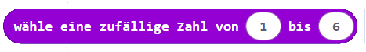

1
Schütteln als Eingabe
Öffne Eingabe und suche den Block „wenn geschüttelt". Ziehe ihn in den Arbeitsbereich — das ist der Auslöser für deinen Würfel.
2
Zufallszahl erzeugen
Öffne Grundlagen → „zeige Zahl". Öffne dann Mathematik → „wähle zufällig von 0 bis 10". Ziehe den Zufalls-Block in das Zahlenfeld von „zeige Zahl". Ändere die Werte auf 1 bis 6.
3
Würfeln!
Flashe den Code. Schüttle den micro:bit kräftig — er zeigt eine Zahl zwischen 1 und 6. Im Simulator kannst du auf „SHAKE" klicken, um es zu testen.
4
Erweitern: Größerer Bereich
Ändere die Zufallszahl auf 1 bis 100. Was passiert? Kannst du stattdessen ein zufälliges Symbol anzeigen? (Tipp: „zeige Symbol" statt „zeige Zahl" und Symbole in eine Liste packen)
MakeCode Editor öffnen
In MakeCode öffnen
Öffnet makecode.microbit.org in einem neuen Tab — kein Login nötig.
- „wenn geschüttelt" ist in der Kategorie Eingabe — scrolle nach unten, wenn du ihn nicht siehst.
- Den Zufalls-Block findest du unter Mathematik (lila Kategorie).
- Ziehe den Zufalls-Block in das ovale Zahlenfeld von „zeige Zahl" — nicht daneben!
- Setze den Bereich auf von 1 bis 6 für einen echten Würfel.
⚠️
Versuche es zuerst selbst — die Lösung ist nur zur Kontrolle!
So sieht der fertige Code aus



✨ Der Zufalls-Block steckt innerhalb des „zeige Zahl"-Blocks — er liefert die Zahl, die angezeigt werden soll.
✅ Ich habe …
0 / 4